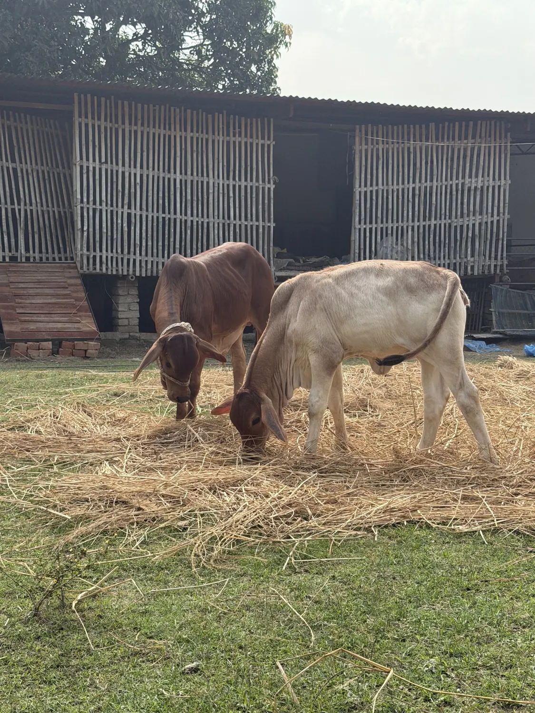
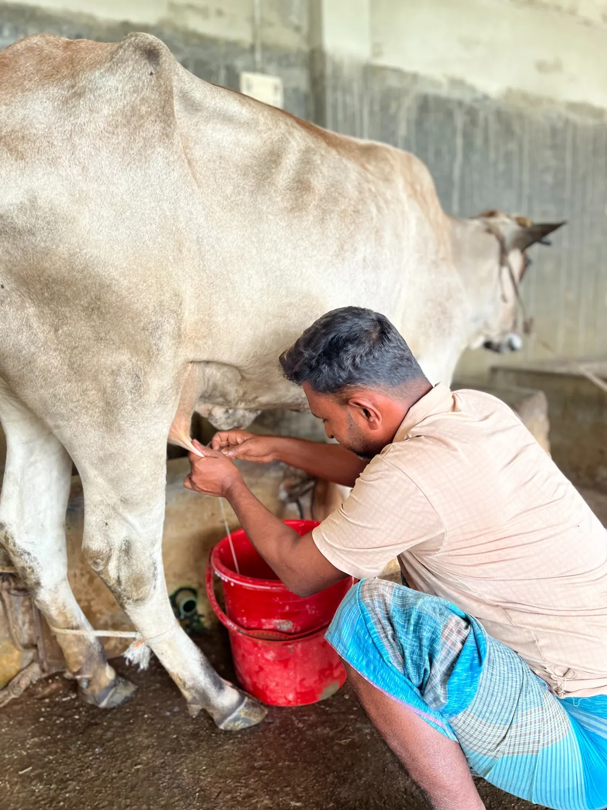
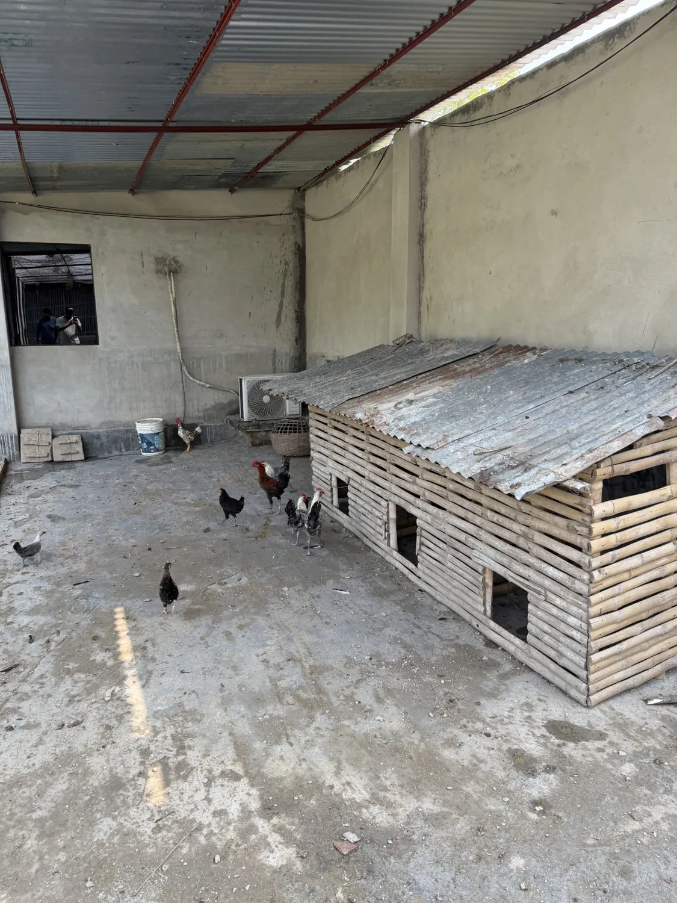
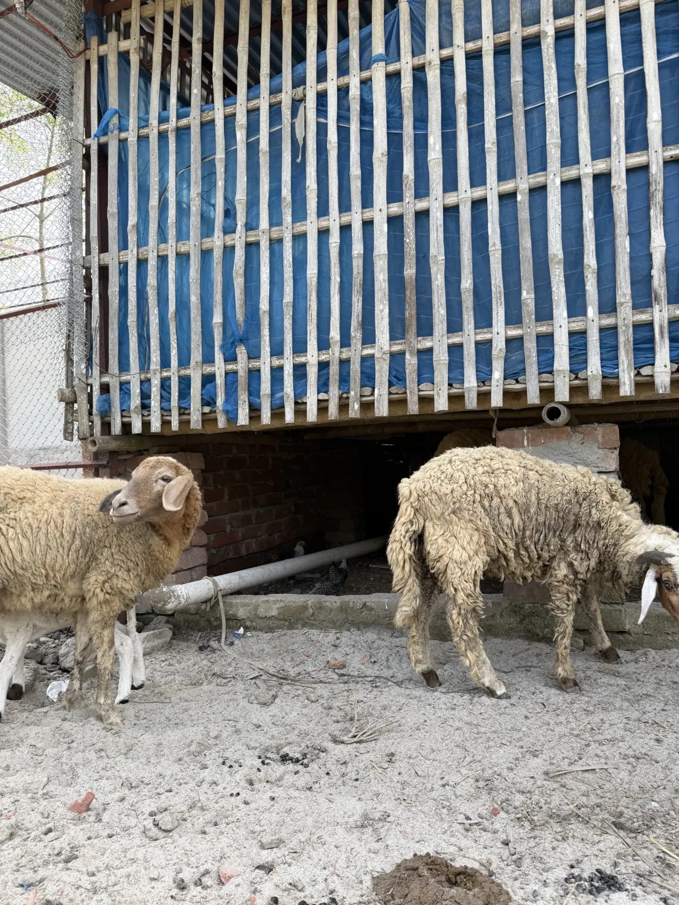
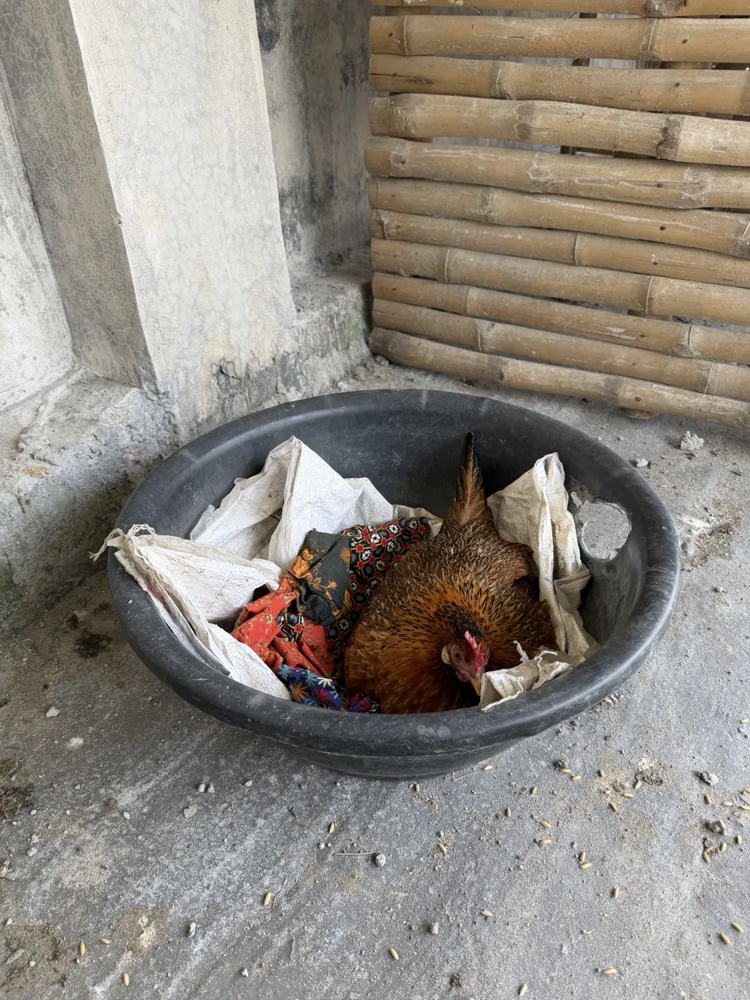

Our Journey Begins at the Farm
At BK Agro, we raise cattle, sheep, ducks, and chickens. We focus on open surroundings, suitable feed, and attentive animal care.
These photos were taken at our own farm, sharing authentic moments of our daily work.

A glimpse of our Meherpur farm, our animal care, and moments from our daily work.
At BK Agro, we raise cattle, sheep, ducks, and chickens. We focus on open surroundings, suitable feed, and attentive animal care.
These photos were taken at our own farm, sharing authentic moments of our daily work.







